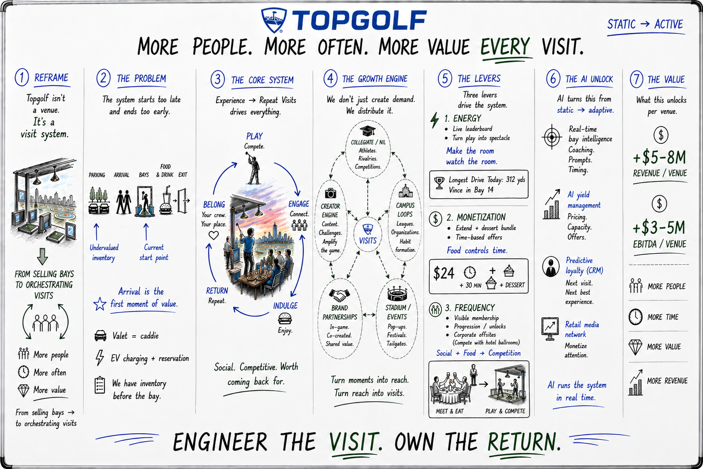

Wednesday, April 29 — last week. Topgolf Austin. I'd come to pick up my wife from a CenTex Plaster educational seminar — a pool-industry trade event with zero golf adjacency — and ended up walking the building for an hour while it ran. Bays at maybe 1 in 10. The CenTex group in a corner running the exact meet → eat → compete arc this deck argues for. The room was alive — the operating model just wasn't priced for what was actually happening in it.
The whiteboard below started there.
More people. More often. More value every visit.
Topgolf isn't a venue. It's a Player journey — and the operating model around it should be a visit system, not a real-estate footprint. The unlock isn't a new build. It's a different way to run the 100+ venues you already have.

One page, seven layers: from a reframe of what Topgolf actually is, through the core Player loop, to the three levers and the AI layer that turn the room into a yield-managed system. The page that follows is the walk-through — pressure-tested against the last 24 months of earnings calls.
Treating Topgolf as real estate forces every growth conversation to start with another build. Treating it as a Player visit system shifts the question to what happens between the moment a Player decides to come and the moment they decide to come back — and that surface area is where the underused margin lives.
This isn't a contrarian take anymore — it's company doctrine. Only 4 venues opened in 2025, 3 planned for 2026, against the 2023 Investor Day target of 10 per year. · Q3 2025 The page that follows is the operating manual for the SVS-first reality the business has already chosen.
The current model treats Parking → Arrival → Bays → F&B → Exit as a linear funnel where revenue starts at the bay. Everything before the bay reads as friction to remove rather than inventory to monetize. The first 20–30 minutes is the most underpriced asset in the building — intent is highest, attention is captive, and competitors don't exist.
The slowdown isn't structural — it's an unmonetized arrival window and an under-engineered return loop. Both are operating model, not category. Player frequency sits at 1.5 visits/year today; the system below targets 2.5+ without a single new venue. · Q3 2025
That Wednesday at Topgolf Austin was the proof. CenTex Plaster — a regional pool-trade company with no golf adjacency at all — was a paying corporate buyer using the venue exactly the way this section argues for. The building's pricing, energy, and arrival flow were all calibrated for a Saturday night that wasn't going to happen for another 50 hours — while 9 of every 10 bays sat unsold around the one room that was working.
Same logic on the back end: the visit doesn't end at the exit, it ends when we decide the next one is happening. Today that decision belongs to the Player. It should belong to the system — which is what Topgolf PlayMore begins, and what Section 05 finishes.
The flywheel is the asset. The five steps below map cleanly to the company's stated three-pillar framework — digital, experience, value · Q1 2024 call · Brewer — and every operating decision should be measured against whether it tightens the loop or leaks energy out of it.
Belong + Engage = digital · Play = experience · Indulge + Return = value
Belong is the part the industry forgets: your crew, your place, your bay number that the staff already knows. That's what creates the next visit. The rest of the loop is execution — and PlayMore is the first product the company has shipped that lives in the Belong layer.
Demand creation is solved at most consumer brands. Demand routing isn't. The five vectors below already exist in the world — the job is to wire them into a single distribution layer that points at visits, not impressions. Brand partnerships leads because that's the discipline this business is built to scale: the Visa partnership June 2024 is the proof point, the Sonic and NFL game integrations · Q3 2024 / Q3 2025 are the format.
The same building, run with these three dials turned up, behaves like a different business. None of them require new construction; all of them require the operating model to treat the room as an active surface, not a static one. The 60/90-minute reservations rolled out system-wide in Q2 2025 — about half of digital reservations now · Q2 2025 call — are the proof the company can move on this kind of change quickly.
The three levers above are valuable when a GM tunes them weekly. They're transformative when the system tunes them every minute. The good news: the substrate is already bought and shipping. Toast POS lands in every venue by end of Q2 2026 · Q3 2025. The consumer data platform launched ahead of schedule in Q1 2024 · Q1 2024 call. The AI layer below sits on top of both.
Build that, and the levers tune themselves: pricing moves with demand, the next visit is recommended before it's requested, and the attention already in the room becomes inventory.
The numbers below are what an average venue should produce once the loop is engineered and the levers are pulled — not the headline case, the median one. The mechanism is durable because it's compound: more Players improves frequency, frequency improves spend per visit, spend per visit funds the AI layer that improves all three.
The mechanism is already proven at small scale. Q2 2025: traffic up, EBITDAR margin held flat despite a 50% gameplay discount · Q2 2025 call. F&B held price while golf went on sale. The system below is what happens when that mechanism gets engineered, not improvised.
The math: calibrated to a ~$17M average-venue revenue baseline (FY 2024 segment economics). The +$5–8M revenue range is +30–47% per venue, layered across frequency (1.5× → 2.0–2.5×), spend per visit (+$5–10), and 3+ bay corporate (recovering from −36% on 2-yr stack as of Q3 2024). EBITDA flow-through assumes ~50–60% incremental margin on the new revenue layer, consistent with a fixed-cost venue base absorbing additional traffic and spend without proportional cost growth — and consistent with the Q1 2025 long-term margin guide of "north of 35%."
Package the full arc — meet → eat → compete — and sell against hotel ballrooms, not bars. 3+ bay is 20% of FY revenue and the largest stated YoY drag · Q3 2025. The CenTex moment in the field note above is the format spec; the Q4 2024 call cited tripling sales with one national retailer by working with their HQ on holiday parties as the existence proof. If pool-plaster contractors will fill a Wednesday at 4:30, this format works for any B2B audience — and the corporate addressable market is materially larger than the operating model currently prices it as. This is the highest-leverage 90-day move.
Treat arrival as the first product moment. Pull spend forward and extend session length before the Player ever reaches a bay. Booking fees were already removed system-wide in Jan 2025 · Q4 2024 call — the next friction layer is the unmonetized 20–30 minutes between door and bay.
Live leaderboard. Visible competition. Plug the existing IP pipeline (Sonic, Cap, NFL) into the room itself, not just the bay. Time on site, engagement, and repeat all move together when the room becomes its own content.
These three are the wedge. They prove the operating model before any new capex, and they fund the AI layer that compounds the rest.
The three levers above map to the three credentials you brought into the chair on Feb 23. None of this is theory you'd be installing fresh — it's the playbook you've already proven, applied to a venue type with three to four times the average ticket of a Chuck E. Cheese and the captive attention of a Six Flags coaster line.
Curious where this matches — or misses — how you're thinking about the first 100 days. Happy to walk the board live, pressure-test the math, or just trade notes.